CISCO Firewall ASA Configuring Zones
One of the most effective ways to manage the security of our topology is to zone/segment our network as a baseline. This guide will walk you through the basics of zoning a network - INSIDE, OUTSIDE, and DMZ, using a CISCO ASA Firewall.
Lab Setup
- GNS3 as the network emulation software.
- My PC (Kali) is in the INSIDE ZONE.
- 2x switches.
- 1x CISCO ASA Firewall ASA 9.9(2) - Cisco Modelling Labs Personal for $199.
- 1x Virtual PC simulator in the DMZ ZONE.
- 1x Virtual PC simulator in the EXTERNAL ZONE.
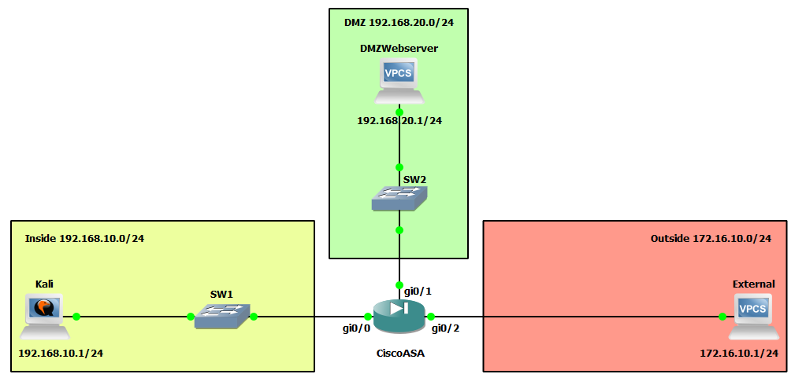
IP Schema
The first thing we need to decide on to get these systems communicating is an IP addressing scheme. For this example, I am going to use /24 subnets on addresses 192.168.10.0, 192.168.20.0, and 172.16.10.0. The host machines will be allocated the first usable address in these subnets, with the interfaces on the ASA firewall being allocated the last usable address in these subnets.
IP Configuration
To start, I am going to set the IP address for the client machines. For the DMZ client:
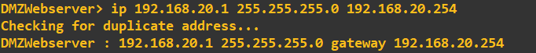
For the Outside client:
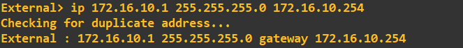
For the Inside client:
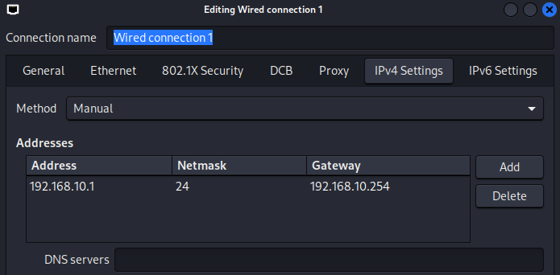
We can now configure the ASA FW interfaces as per the topology above. I'll configure the INSIDE interface (gi0/1) first:
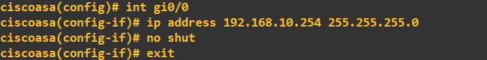
Next, the DMZ interface (gi0/1):
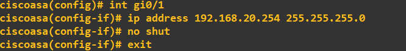
And finally, the OUTSIDE interface:
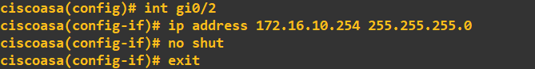
At this stage, you might think all should be good when it comes to the client machines within these zones pinging their respective ASA FW gateway addresses. However, this will currently fail:
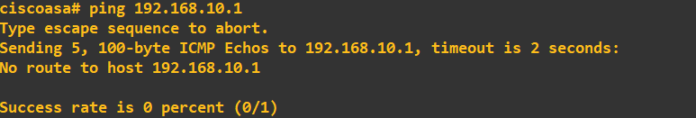
In the screenshot above, I tried to ping the Kali IP (inside) from the ASA FW, and as you can see, this clearly failed. It failed because no zone has been applied to the interface.
Creating Our Zones
To create our zones, we need to edit the interface settings on the ASA FW and use the 'nameif' command:
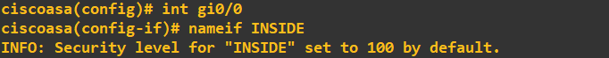
You will notice straight away an INFO message telling us the security level of the INSIDE zone has been set to 100 (security levels can range from 0 to 100). The concept of security levels is relatively simple; the higher the security level, the more trusted the network is. Traffic is allowed into a lower security level zone by default but not vice versa. To allow traffic to pass from a low to a high security level zone, you must explicitly tell the FW using Access Control Lists (ACLs). I will now set the security levels of the remaining two zones, DMZ and OUTSIDE:
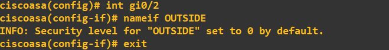
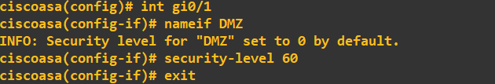
Notice when I set the DMZ tag on gi0/1, the ASA FW automatically assigned it a 0 security level. I manually changed this to 60 as I trust the DMZ more than the OUTSIDE zone but less than the INSIDE zone. With the zones now set on the three interfaces, I will perform a quick connectivity check:
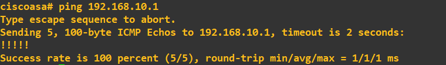
The ASA FW can now ping the Kali IP. The Kali client can now ping the ASA FW INSIDE interface:
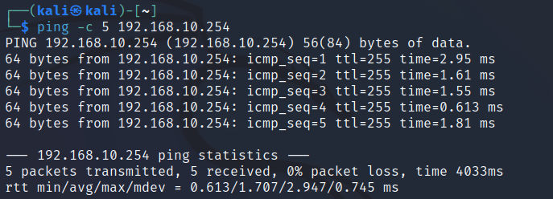
If the zones are working correctly, we should be able to:
- Ping any subnet from the INSIDE.
- Ping the OUTSIDE from the DMZ, but not the INSIDE.
- Not ping any subnet from the OUTSIDE.
Firstly, I will try to ping the DMZ from the INSIDE (Kali to DMZ server). As you can see, this immediately fails:
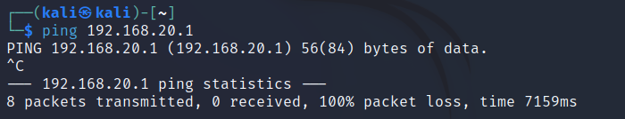
There is a simple fix to rectify this, but let's see what's going wrong. By default, the ASA FW global inspection policy does not allow ICMP traffic. Think of the global inspection policy as a set of rules that we, as administrators, set to control the traffic we want to allow through all interfaces on the FW. We can view our current global inspection policy by running the following command:
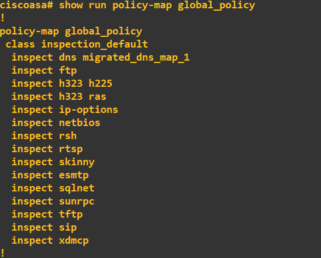
Notice that ICMP is missing from the list, so it doesn't have an inspect rule. We simply need to add ICMP to this global policy:
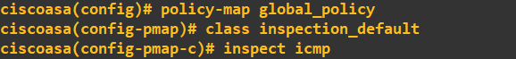
Viewing our global inspection policy should now show ICMP:
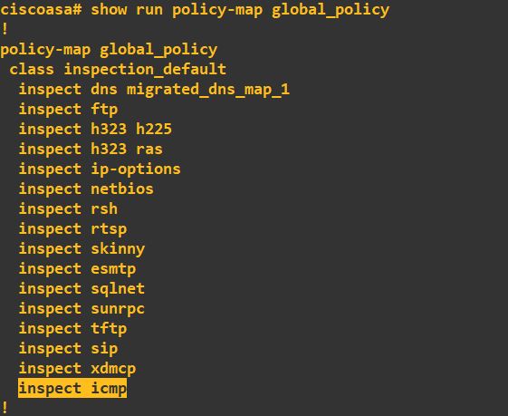
I will now try to ping all subnets from the INSIDE network:
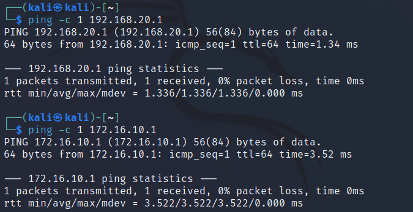
Success! As expected, the INSIDE network with the highest security level can reach all other networks. I will now try to reach the INSIDE and OUTSIDE networks from the DMZ:
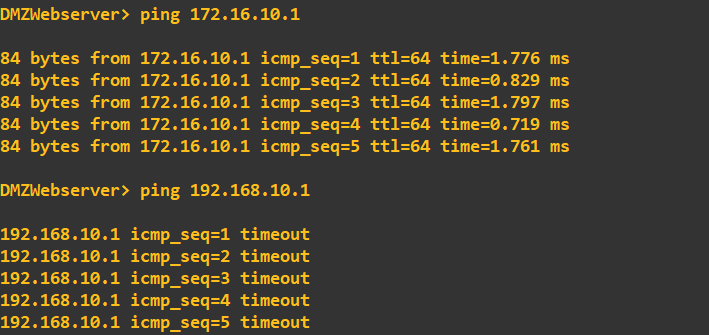
The DMZ (security level 60) can ping the OUTSIDE (security level 0) but cannot ping the INSIDE (security level 100). This is correct as the INSIDE network has a higher security level. Lastly, I'll check that the OUTSIDE is blocked from pinging the INSIDE and DMZ:
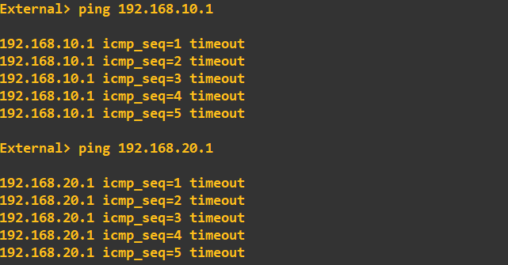
As expected, the OUTSIDE cannot ping the INSIDE or DMZ as it has the lowest security level of the three networks. We now have three independent zones. We will build on this topology in future guides with NAT and ACLs to allow certain traffic into the DMZ from the OUTSIDE and certain traffic into the INSIDE from the DMZ.